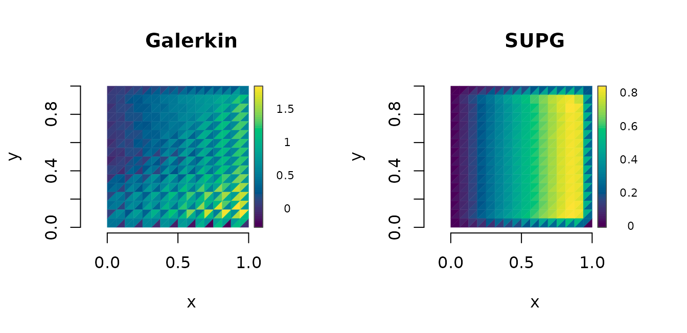
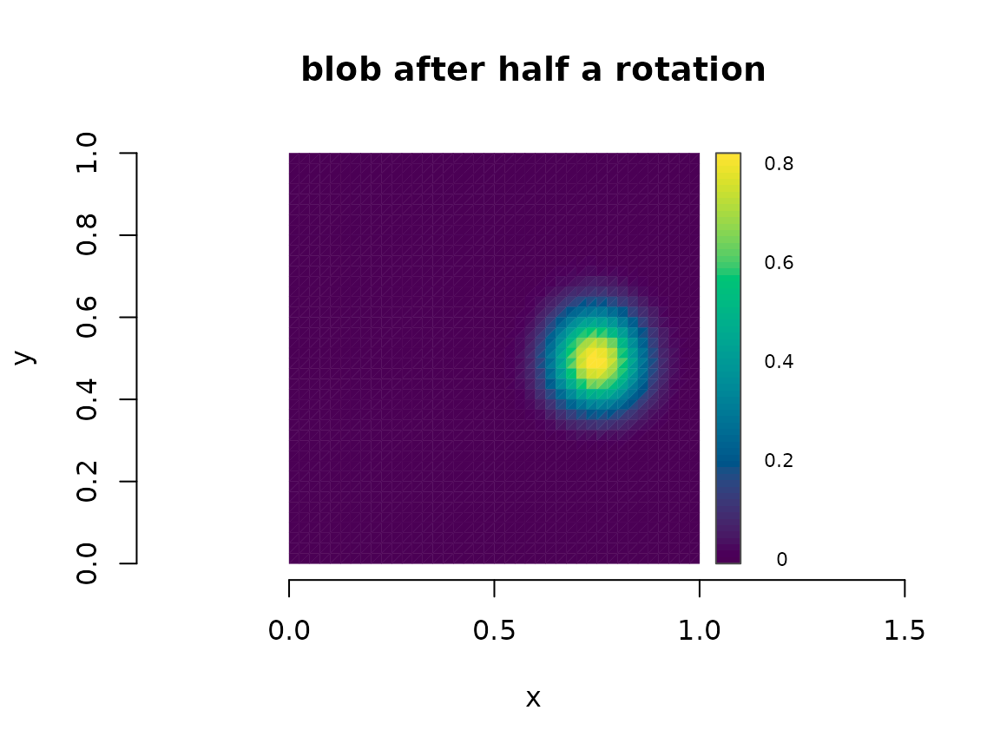

Advection-diffusion and stabilization
Source:vignettes/advection-diffusion.Rmd
advection-diffusion.RmdThe problem
-\nabla\cdot(k\nabla u) + b\cdot\nabla u + cu = f .
The element Peclet number \mathrm{Pe}_T = |b|h_T/(2k) compares advection to diffusion at the scale of the mesh. For \mathrm{Pe}_T \le 1 the standard Galerkin method is accurate. For \mathrm{Pe}_T \gg 1 it remains stable in theory but produces spurious oscillations near layers that the mesh does not resolve.
Galerkin in the diffusive regime
exact <- function(x, y) sin(pi * x) * sin(pi * y)
grad_exact <- function(x, y) cbind(pi * cos(pi * x) * sin(pi * y), pi * sin(pi * x) * cos(pi * y))
k <- 0.1; b <- c(1, 0.5)
f <- function(x, y) {
g <- grad_exact(x, y)
k * 2 * pi^2 * exact(x, y) + b[1] * g[, 1] + b[2] * g[, 2]
}
prob <- elliptic_problem(pde_mesh_rectangle(nx = 4), diffusion = k, advection = b, source = f,
bcs = dirichlet_bc(0))
convergence_study(prob, exact, grad_exact, mesh_sizes = c(8, 16, 32))
#> Mesh convergence study
#> h ndof L2 H1_semi rate_L2 rate_H1_semi
#> 0.17678 81 0.0144953 0.4378 NA NA
#> 0.08839 289 0.0035579 0.2183 2.026 1.004
#> 0.04419 1089 0.0008852 0.1091 2.007 1.001The system is not symmetric, so the solver uses sparse LU:
solve_pde(prob)$diagnostics$solver$method
#> [1] "lu"Boundary layers at high Peclet number
With k = 10^{-3}, b = (1, 0), f = 1 and u = 0 on the boundary, the solution grows like x and drops to zero in a thin layer at the outflow boundary x = 1.
m <- pde_mesh_rectangle(nx = 16)
common <- list(mesh = m, diffusion = 1e-3, advection = c(1, 0), source = 1, bcs = dirichlet_bc(0))
gal <- solve_pde(do.call(elliptic_problem, common))
supg <- solve_pde(do.call(elliptic_problem, c(common, stabilization = "supg")))
op <- par(mfrow = c(1, 2))
plot(gal, main = "Galerkin")
plot(supg, main = "SUPG")
par(op)
rbind(Galerkin = range(gal$u$values), SUPG = range(supg$u$values))
#> [,1] [,2]
#> Galerkin -0.8081525 3.3572200
#> SUPG 0.0000000 0.8734344Galerkin oscillates with amplitude far beyond the true range [0, 1]; SUPG does not.
Streamline upwind Petrov-Galerkin
SUPG adds, element by element, the residual tested against the streamline derivative of the test function:
\sum_T \tau_T \int_T (b\cdot\nabla u + cu - \nabla\cdot(k\nabla u) - f)\,(b\cdot\nabla v)\,dx, \qquad \tau_T = \frac{h_T}{2|b|}\left(\coth \mathrm{Pe}_T - \frac{1}{\mathrm{Pe}_T}\right).
The added term vanishes for the exact solution, so the method stays
consistent and keeps its convergence order. Its main effect is
artificial diffusion \tau_T\,b b^\top
along the streamlines only. In pdecompR,
stabilization = "supg" is available for P1 elements (for
which the diffusion term in the residual vanishes elementwise with
constant k).
SUPG reduces but does not eliminate overshoots near sharp layers; it is not a positivity-preserving scheme, and no such claim is made.
Transient transport
parabolic_problem() accepts the same advection field and
stabilization; for transient problems the SUPG residual includes \partial_t u, which adds \tau_T\int_T \partial_t u\,(b\cdot\nabla v)
to the mass matrix.
blob <- function(x, y) exp(-100 * ((x - 0.25)^2 + (y - 0.5)^2))
rot <- function(x, y) cbind(-(y - 0.5), x - 0.5) * 2 * pi
p <- parabolic_problem(pde_mesh_rectangle(nx = 40), diffusion = 1e-4, advection = rot,
initial = blob, bcs = dirichlet_bc(0), time = c(0, 0.5),
stabilization = "supg")
s <- solve_pde(p, dt = 0.01, output_times = c(0, 0.25, 0.5))
plot(s, time = 0.5, main = "blob after half a rotation")